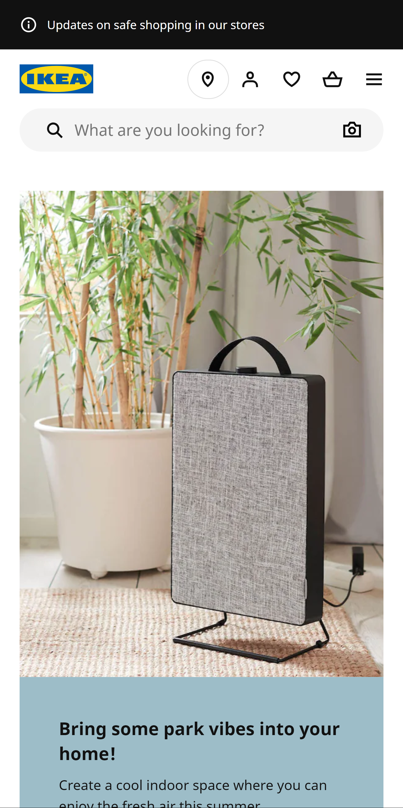
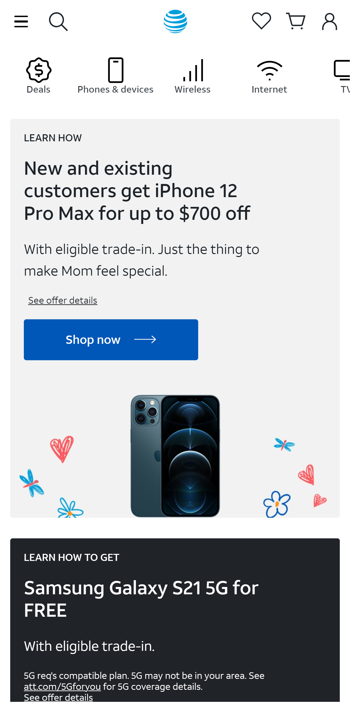
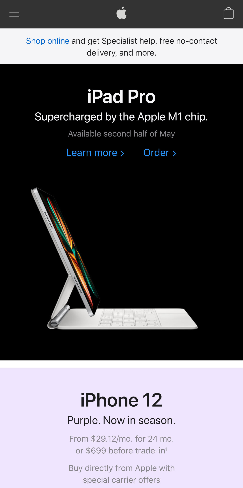

Rule of Thirds
Ikea
ikea.com
Ikea's website is a great example of rule of thirds. Their website is mostly pictures of their furniture, and the majority of these pictures follow this principle. For example, the grey air filter is in the bottom right portion of the picture. The website itself also avoids dividing things in half and tries to divide it into thirds.
Visual Hierarchy
AT&T
att.com
AT&T's website is a great example of visual hierchary. Using color and size, it is easy to rank what is most important on the page. The big blue "Shop Now" button is the most important, followed by the large black title, and then the picture of two cellphones.
White Space and Clean Design
Apple
apple.com
Apple's website is a great example of White Space and Clean Design. They use a very minimalist approach. There's lots of empty space with minimal space to avoid overcrowding visitors senses. People can click on links for more information, but the website is very minimal and pleasing to the eyes.